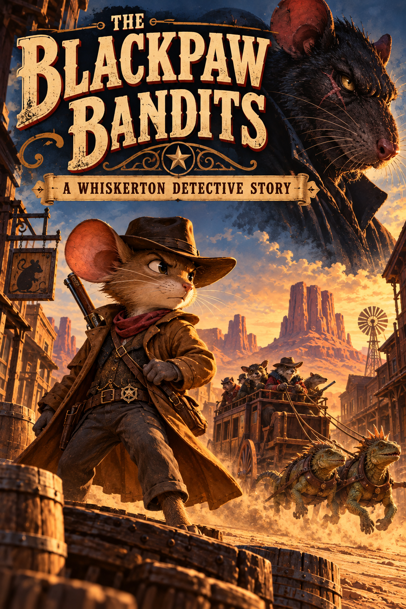

Books by Richard C. Franklin
Writing

Featured novel
Defector
A Book of Mormon Adventure
Framed for the public assassination of the king, a young warrior escapes to the land of his enemies, leaving behind his family, the woman he loves, and his military prospects. Among a group of faith-driven refugees, he discovers an unexpected new life. However, when a military traitor ignites war between the two nations, the warrior must choose between his new life of peace and a chance for revenge.
Set against the vivid backdrop of the Book of Mormon, Defector uses real characters and events to explore the human passions that define us as individuals and as a society. Passions like jealousy, revenge, love, faith, and friendship.
Find Defector on Amazon ↗
Poetry
Where Our Statues Lie
and That Unique Haven
These poems are a collection of ideas that I’ve written over the last 20 years of my life. They explore the struggles and triumphs I have experienced during that time. Hopefully, they help you a little bit with your own journey.
They have been loosely organized into 4 stages of finding one’s self: Folly, Fear, Finding, and Faith. Each stage helps us to better understand who we are, and our ultimate, divine potential.
Find the collection on Amazon ↗
Fiction
Peril At Freeman Library
Christopher realizes that he has the ability to jump in and out of his favorite books, but the ability comes with a price. Guided by a shadowy cat, Christopher discovers lessons about life and loss in the adventures he loves to read, including lessons about the loss of his dad.
Due to publishing issues, this book is only available upon special request.

Work in progress
The Blackpaw Bandits
A Whiskerton Detective Story
Join Bartleby Brandt, a newly minted Whiskerton Detective as he fights to free the frontier town of Huckleberry Springs from Blackpaw and his gang.
This is a passion project and an ode to one of my favorite authors, Brian Jacques. Currently sitting in the drawer and waiting for the right opportunity to share with the world.
AI used for stand-in cover art.